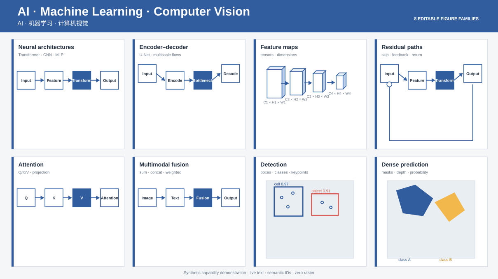
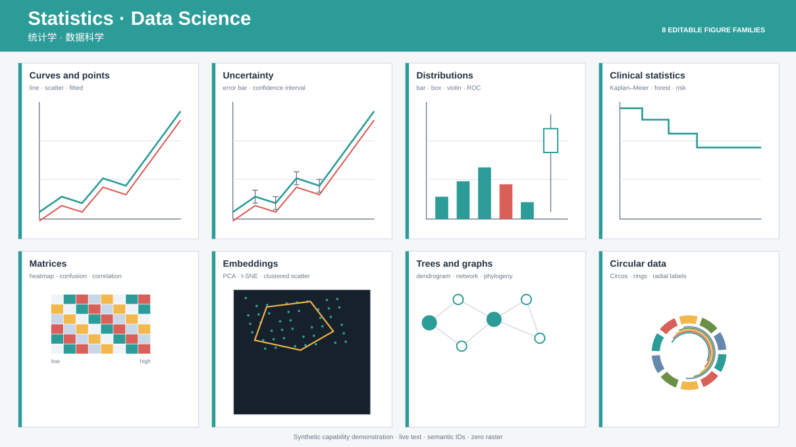
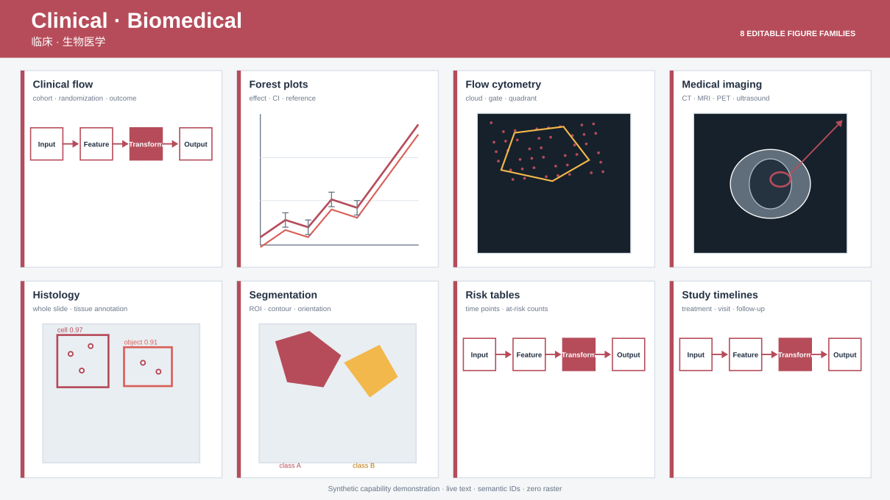
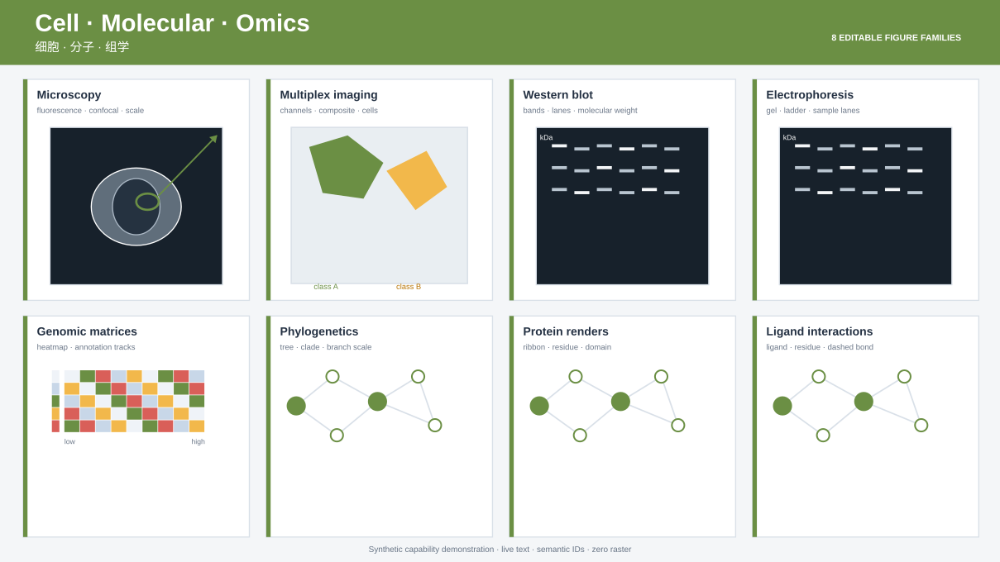
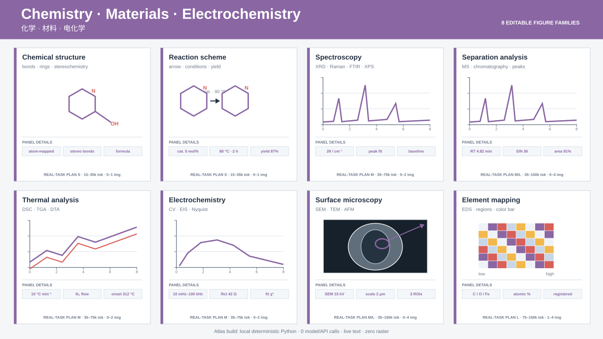
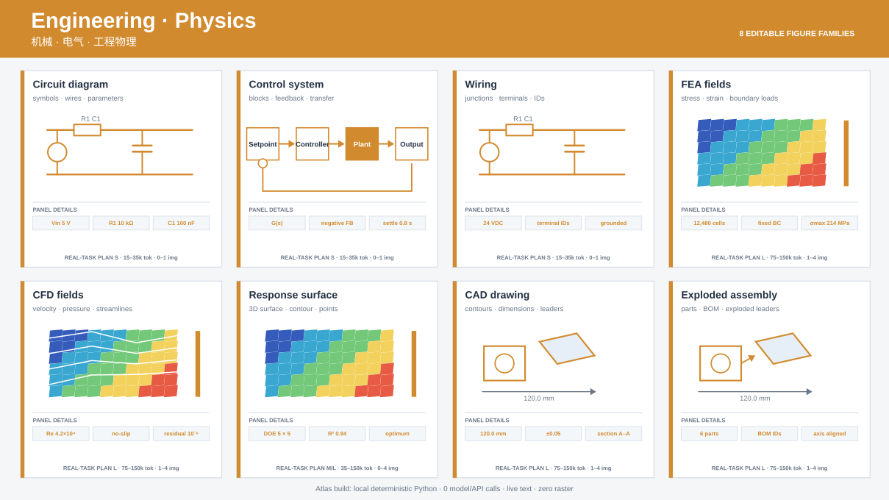
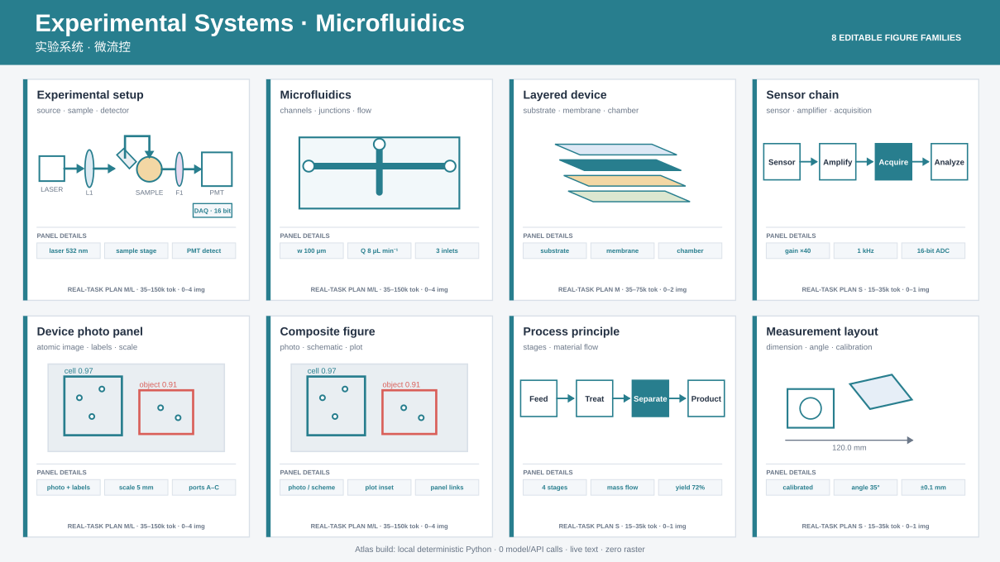
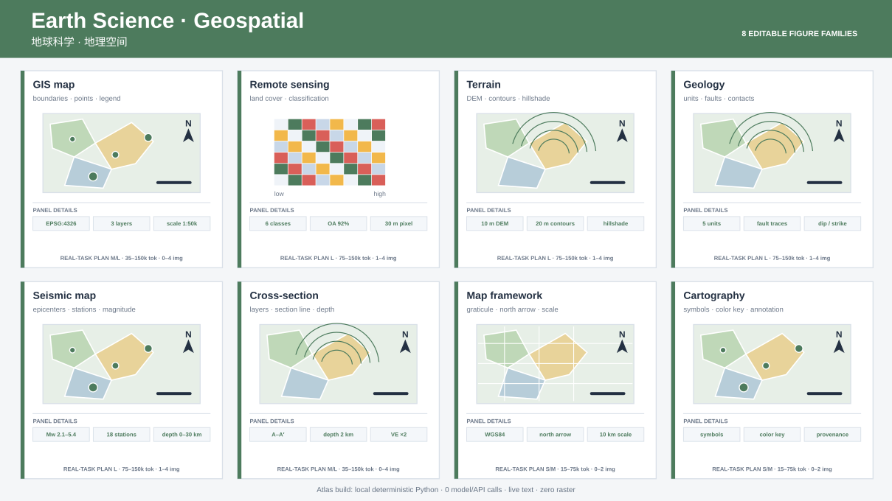

AI · Machine Learning · Computer Vision
AI · 机器学习 · 计算机视觉

64 deterministic, editable SVG demonstrations generated through the reconstruction skill.
AI · 机器学习 · 计算机视觉

统计学 · 数据科学

临床 · 生物医学

细胞 · 分子 · 组学

化学 · 材料 · 电化学

机械 · 电气 · 工程物理

实验系统 · 微流控

地球科学 · 地理空间
